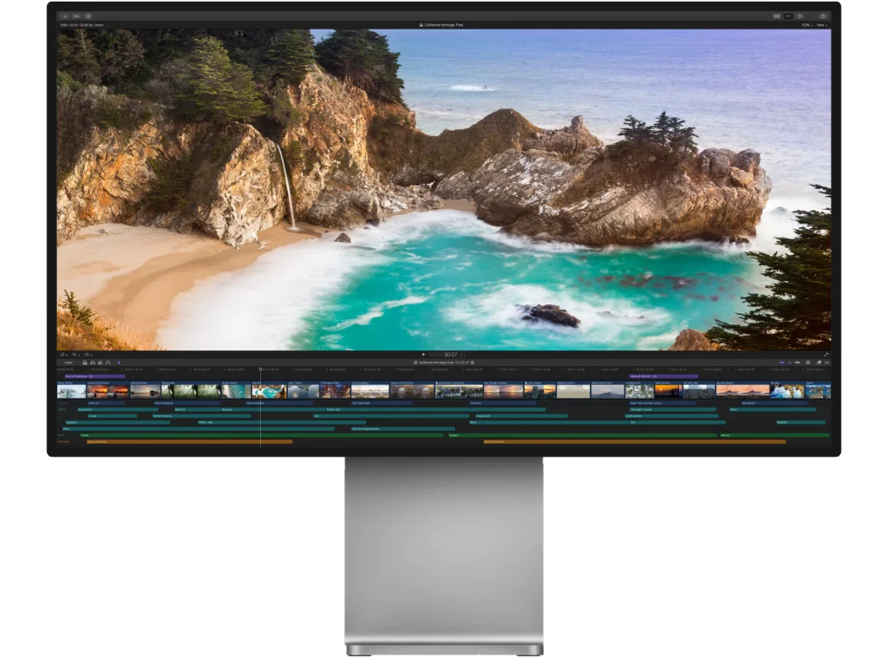

请访问原文链接：Apple Final Cut Pro 11.0 - 专业后期制作 (视频剪辑) 查看最新版。原创作品，转载请保留出处。
作者主页：sysin.org
Final Cut Pro 11 开启 Mac 视频剪辑新篇章
Mac、iPad 和 iPhone 版 Final Cut Pro 迎来智能新功能、节省时间的工具和创意新选项，以及空间视频剪辑功能

Apple 今日宣布推出 Final Cut Pro 11，开启 Mac 视频剪辑新篇章，同时推出 iPad 版 Final Cut Pro 2.1。
后期制作，上演华丽一幕
剪辑、音轨、图形特效、整片输出，一气呵成。
先进的调色功能、HDR 视频支持，以及 ProRes RAW。
全新 Metal 引擎 (sysin)。
360° 全景剪辑，用头戴式 VR 装置来回放。

Final Cut Pro - Compressor
强大的编码，传输，完成。
Compressor 与 Final Cut Pro 紧密整合，带来了自定义输出设置、分布式编码和丰富的传输功能。它支持 360° 全景视频、HDR、HEVC 和 MXF 输出，让你能以强大、灵活的方式导出 Final Cut Pro 项目。
Final Cut Pro - Motion
特效，特别容易。
Motion 是一款强大的运动图形工具，可帮你便捷地制作影院级的二维、三维和 360° 字幕，流畅的转场，以及逼真的实时特效。凭借全新的 Metal 引擎，Motion 还能让你以惊人的速度制作并播放特效。
版本记录
11.0，2024年11月13日
Final Cut Pro 11 更加快速，更加智能。利用经人工智能优化的全新工具，通过改进的省时工作流程提高工作速度，还可编辑空间视频。
- 通过由人工智能驱动的创新磁性蒙版扩展创意自由的边界，无需绿幕或者耗时的手动转描即可分离出任何素材中的人物、物体和形状。
- 使用“转写为字幕”，即可通过针对速度和准确性构建的强大人工智能语言模型自动从时间线中的语音音频创建字幕。（需要搭载 Apple 芯片且运行 macOS Sequoia 或更高版本的 Mac。）
- 导入和编辑来自 Apple Vision Pro 或者 iPhone 15 Pro 或后续机型的空间视频片段；添加字幕、色彩校正和效果；以及共享可在 Apple Vision Pro 上查看的精彩空间项目。（需要搭载 Apple 芯片的 Mac。）
- 创建同步片段或多机位片段时，通过自动隐藏原始片段以避免浏览器杂乱。
- 使用“垂直缩放以适合”缩放片段高度来贴合时间线。
- 通过全新“画中画”和“放大”效果加速创意流程。
- 通过全新“模块化”转场创建精美视觉显示效果。
- 通过用于浏览器和时间线中常见任务的新键盘快捷键提高效率。
- 安装第三方媒体扩展以支持播放和编辑更多视频格式。（需要 macOS Sequoia 或更高版本。）
10.8.1，2024 年 8 月 13 日
Final Cut Pro 10.8.1 包括以下错误修复：
- 修复了使用左右箭头键逐步浏览时间线片段时导致音频无法播放的问题。
- 修复了可能导致部分 MTS 文件播放时无音频的问题。
- 修复了在触控板上使用三指手势时可能导致 Final Cut Pro 停止响应的问题。
10.8，2024 年 6 月 20 日
Final Cut Pro 10.8 包括以下优化和错误修复：
- 使用由机器学习驱动的全新“优化光线和颜色”效果，自动改善视频或静止图像的颜色、颜色平衡、对比度和亮度。
- 启用“流畅慢动作”，以在搭载 Apple 芯片的 Mac 机型上使用经人工智能优化的算法打造惊艳的慢动作视觉效果。
- 通过在检查器中重新命名色彩校正和视频效果来保持整洁有序。
- 将效果直接从检查器拖到时间线或检视器中的其他片段。
- 使用时间线索引中的新筛选方式快速识别包含音频效果、视频效果、重新定时更改的片段，或者缺少媒体、缺少效果的片段。
- 按卷、场景、摄像机角度、摄像机名称、自定义元数据或效果名称在时间线索引中搜索。
- 使用全新“开头是”和“结尾是”搜索条件在浏览器中搜索片段。
- 改进了倒转播放期间的时间线滚动行为。
10.7，2023 年 11 月 30 日
Final Cut Pro 10.7 包括以下优化：
- 播放期间自动滚动时间线，以保持片段在播放头下方可见。
- 将所选的一组连接片段合并到连接的故事情节，以提高编辑效率。
- 同时查看视频和音频角色颜色，以轻松一览时间线的结构。
- 在搭载 Apple 芯片的 Mac 电脑上使用 “对象跟踪器” 的全新机器学习模型分析面孔和其他对象的移动时，可看到改进的结果。
- 使用优化的 “在浏览器中显示” 功能，在浏览器中轻松找到片段的同时不丢失所选的关键词精选或智能精选。
- 跨多个可用媒体引擎同时处理视频分段，以更快速导出 HEVC 和 H.264 文件（需要 macOS Sonoma 或更高版本，以及搭载 Apple M1 Max、M1 Ultra、M2 Max、M2 Ultra 或 M3 Max 的 Mac）。
10.6.10，2023 年 10 月 5 日
- 修复了基于 FxPlug 的字幕分析片段后可能导致分析不完整的问题。
- 修复了可能导致应用了 “对齐到” 行为的 Motion 模板显示错误动画的问题。
10.6.9，2023 年 9 月 19 日
Final Cut Pro 10.6.9 包括以下优化和错误修复：
- 充分利用 iPhone 15 Pro 所拍摄 Log 编码视频的灵活性和动态范围。
- 使用新 Log 描述文件优化 Fujifilm、DJI 和 ARRI 热门摄像机所拍摄素材的外观。
- 修复了可能导致 Motion 模板未响应 “不透明度” 设置的问题。
10.6.8，2023 年 8 月 1 日
- 修复了检视器中的视频可能冻结的问题
10.6.7，2023 年 7 月 18 日
Final Cut Pro 10.6.7 包括以下错误修复：
- 解决了音频效果在播放期间无法还原的问题。
- 修复了在使用 FCPXML 导入时音频单元效果的值可能错误的问题。
- 改进了通过触控栏调整音量时已展开音频组件上的波形重绘。
- 解决了尝试将 “语音突显” 的 “数量” 滑块设为 7% 以下的值时，滑块会吸附到 0% 的问题。
- 提高了对已应用 “场景移除蒙版” 的片段进行重新定时操作时的可靠性。
- 修复了在使用 FCPXML 导入时颜色调整效果中的 “控制范围” 设置会错误设为 SDR 的问题。
10.6.6，2023 年 5 月 23 日
- 导入来自 iPad 版 Final Cut Pro 的项目，并利用超凡性能和高级色彩校正工具等等。
- 使用自动颜色管理在同一项目中轻松编辑 HDR 和 SDR 片段，并通过视频智能色调映射以符合你的色彩空间。
- 选取一系列经专业设计的全新字幕、效果、转场和发生器，以优化视频的外观。
- 通过颜色调整效果改进色彩校正工作流程，还可应用全新颜色预置为片段带来独特外观。
- 使用场景移除遮罩移除和替换主体后方的背景，无需使用绿屏。
Final Cut Pro 还包括以下额外修复和优化：
- 使用全新 “ProRes RAW 设置” 窗口轻松访问 ProRes RAW ISO、色温和曝光偏移。
- 安装来自摄像机生产企业的 Apple ProRes RAW 插件，以查看和调整为该摄像机传感器优化的设置。
- 通过搭载 Apple 芯片的 Mac 电脑上的硬件加速功能，以最高 8K 分辨率导出 HEVC。
- 修复了多机位片段有时可能变黑的问题。
- 导出到 EXR 时现包括 Alpha 通道。
- 修复了从照片浏览器添加视频片段时可能将较低分辨率文件放入时间线的问题。
- 修复了 Final Cut Pro 可能无法读取带有内嵌 LUT 的 Sony FX9 片段的问题。
- 修复了包含 Canon 片段的 exFAT 格式 SD 卡已装载时，Final Cut Pro 可能无法打开的问题。
10.6.5，2022 年 10 月 24 日
- 支持在搭载 Apple 芯片的 Mac 上更快导出 H.264 或 HEVC
- 提高了在基于 Intel 的 Mac 上断开连接随航显示器时的稳定性
- 提高了在配备环境光感应器的 Mac 上的编辑性能
10.6，2021 年 10 月 18 日
自动跟踪场景中的对象 (sysin)，编辑以 “电影效果” 模式录制的视频，并在全新 MacBook Pro 上享受工作站级的性能体验。
对象跟踪器
- 将效果、字幕或发生器拖入检视器，通过机器学习技术自动检测、跟踪和匹配面孔或对象的移动
- 在检查器中手动添加跟踪器，调整其遮罩形状，以及选取不同的跟踪分析类型
- 在时间线中使用跟踪编辑器以快速删除或重新分析现有轨道的片段
- 在检视器中使用跟踪器源下拉菜单将更多字幕或发生器附加到现有轨道
- 在搭载 Apple 芯片的 Mac 上，对象跟踪使用 Apple 神经网络引擎加快视频分析
电影效果模式
- 编辑在 iPhone 13 上以 “电影效果” 模式录制的视频（需要 macOS Monterey）
- 在检查器中使用 “电影效果” 控制修改景深效果的强度，添加关键帧以随时间更改效果
- 在检视器中使用 “电影效果” 工具选择面孔或其他对象以对焦它们
- 在时间线中使用电影效果编辑器来查看或删除焦点
10.5
- 提高了在搭载 Apple 芯片的 Mac 电脑上的性能和效率
- 在搭载 Apple 芯片的 Mac 电脑上，“智能符合” 可利用 Apple 神经网络引擎更快速进行机器学习分析
- 创建资源库副本并以各种分辨率自动将媒体转码为 ProRes Proxy 或 H.264
最低系统要求
- macOS 10.14.6 或更新版本（详见下载地址说明）
- 4GB RAM (4K 视频剪辑、三维字幕和 360° 视频剪辑建议使用 8GB)
- 支持 Metal 技术的显卡
- 建议使用 1GB VRAM 以支持 4K 视频剪辑、三维字幕和 360° 视频剪辑
- 3.8GB 可用磁盘空间
- 部分功能可能需要接入互联网；可能需要付费。刻录蓝光光盘需要蓝光刻录机。视频输出至 VR 头戴装置需要使用配备独立显卡并运行 macOS Mojave 的 Mac 电脑。建议使用配备 Radeon Pro 580 显卡的 27 英寸 iMac 或更高性能的电脑。
下载地址
App Store：https://apps.apple.com/app/final-cut-pro/id424389933?mt=12
-
Final Cut Pro 10.3，系统要求：OS X 10.11.4 或更新版本
百度网盘链接：[EoD] -
Final Cut Pro 10.4，系统要求：macOS 10.12.4 或更新版本
百度网盘链接：[EoD] -
Final Cut Pro 10.4.5，系统要求：macOS 10.13.2 或更新版本
百度网盘链接：[EoD] -
Final Cut Pro 10.4.10，系统要求：macOS 10.14.6 或更新版本
百度网盘链接：[EoD] -
Final Cut Pro 10.5，系统要求：macOS 10.15.6 或更新版本
Final Cut Pro - Compressor 4.5
Final Cut Pro - Motion 5.5
百度网盘链接：[EoD] -
Final Cut Pro 10.6，系统要求：macOS 11.5.1 或更新版本
Final Cut Pro - Compressor 4.6
Final Cut Pro - Motion 5.6
百度网盘链接：[EoD] -
Final Cut Pro 10.6.5，系统要求：macOS 11.5.1 或更新版本
Final Cut Pro - Compressor 4.6.3
Final Cut Pro - Motion 5.6.3
百度网盘链接：[EoD] -
Final Cut Pro 10.6.8，系统要求：macOS 12.6 或更新版本
Compressor 4.6.5
Motion 5.6.5
百度网盘链接：[EoD] -
Final Cut Pro 10.6.9，系统要求：macOS 13.4 或更新版本
Compressor 4.6.6
Motion 5.6.6
百度网盘链接：[EoD] -
Final Cut Pro 10.6.10，系统要求：macOS 13.4 或更新版本
Compressor 4.6.6 (Final Cut Pro 10.6.9)
Motion 5.6.7
百度网盘链接：[EoD] -
Final Cut Pro 10.7，系统要求：macOS 13.5 或更新版本
Compressor 4.7
Motion 5.7
百度网盘链接：[EoD] -
Final Cut Pro 10.7.1，系统要求：macOS 13.5 或更新版本
百度网盘链接：[EoD] -
Final Cut Pro 10.8.0、10.8.1，系统要求：macOS 13.5 或更新版本
Compressor 4.8
Motion 5.8
百度网盘链接：[EoD] -
Final Cut Pro 11.0.0，系统要求：macOS 14.6 或更新版本
Compressor 4.9
Motion 5.9
百度网盘链接：https://pan.baidu.com/s/1wmqObjD2N4t1CZGFIky_Xw?pwd=naq7

文章用于推荐和分享优秀的软件产品及其相关技术，所有软件默认提供官方原版（免费版或试用版），免费分享。对于部分产品笔者加入了自己的理解和分析，方便学习和研究使用。任何内容若侵犯了您的版权，请联系作者删除。如果您喜欢这篇文章或者觉得它对您有所帮助，或者发现有不当之处，欢迎您发表评论，也欢迎您分享这个网站，或者赞赏一下作者，谢谢！
 支付宝赞赏
支付宝赞赏
 微信赞赏
微信赞赏
赞赏一下